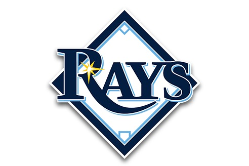
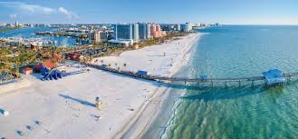
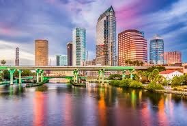

Tampa, located on the Gulf Coast of Florida, is a vibrant city known for its rich history, diverse culture, and thriving economy. As the largest city in the Tampa Bay area and the county seat of Hillsborough County, Tampa is home to over 400,000 residents, making it the third-most populous city in Florida after Jacksonville and Miami.
Historically, Tampa was established as a military center with the construction of Fort Brooke in 1824. The city gained prominence in the late 19th century with the arrival of the cigar industry, spearheaded by Vicente Martinez Ybor, which led to the development of Ybor City. This industry earned Tampa the nickname "Cigar City" and attracted a diverse population of immigrants from Cuba, Spain, Italy, and other countries.
Today, Tampa boasts a dynamic economy driven by tourism, finance, technology, and healthcare. The Port of Tampa is the largest in Florida, playing a crucial role in international trade. The city is also renowned for its cultural events and attractions, including the annual Gasparilla Pirate Festival, Busch Gardens amusement park, and the historic Ybor City district. The median household income in Tampa, FL in 2022 was $71,089, which was 2.5% greater than the median annual income of $69,303 across the entire state of Florida.
Tampa's natural beauty is complemented by its proximity to pristine beaches and scenic waterways. The city's warm climate and outdoor recreational opportunities make it an attractive destination for tourists and new residents alike. Whether exploring its cultural heritage or enjoying its modern amenities, Tampa offers a unique blend of history and contemporary living.
The Tampa Bay Rays are a Professional baseball team based in St. Petersberg, Florida, that competes in Major League Baseball’s American League East Division. Founded in 1988 as the Tampa Bay Devil Tays, the team rebranded to simply the Rays in 2008, coinciding with a dramatic turnaround in their on-field performance.
Tampa and its surrounding areas are home to some of the most beautiful and diverse beaches in Florida. While Tampa itself has a limited beachfront, the nearby Gulf Coast offers a stunning array of sandy shores that cater to every preference. From bustling party scenes to tranquil nature preserves, The Tampa Bay area boasts a variety of beach experiences within easy reach of the city.
Tampa Bay is a vibrant metropolitan area on the Gulf Coast of Florida, encompassing the cities of Tampa, St. Petersburg, and Clearwater. Tampa is located in Tampa Bay region on the Gulf Coast of Florida. It is classified as an urban city. Tampa was incorporated on December 15, 1855. Known for its beautiful waterfronts and bustling urban centers, Tampa Bay is the 17th-largest metropolitan area in the United States, with a population of over 3 million people as of the 2020 Census. The average household income in Tampa, Florida is $109,168.
